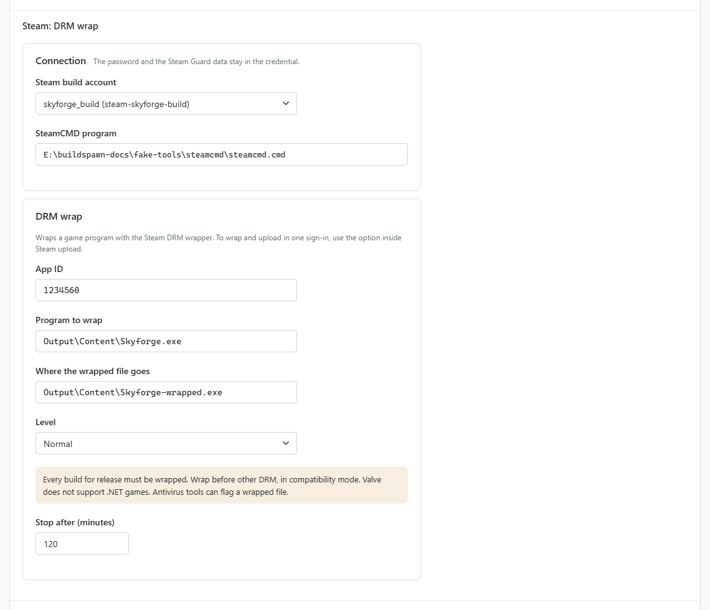

Steam: DRM wrap
Wrap a game program with the Steam DRM wrapper, as a step of its own.
When to use it
Use it to wrap a program and look at the result before you upload, or when the wrapped file goes somewhere other than a Steam upload. To wrap and upload in one sign-in, use the Wrap these files with the Steam DRM wrapper first option inside Steam upload instead.
How to set it up
- Open the build configuration and go to Settings › Build steps › Add build step › Steam: DRM wrap.
- Choose the Steam build account.
- Type the App ID and the Program to wrap.
- Choose a Level. Click Save.

Every field
| Field | What it does | Default | Example |
|---|---|---|---|
| Steam build account | The credential to sign in with. The password and Steam Guard data stay in the credential. | None | steam-build |
| SteamCMD program | Path of SteamCMD. | Found on the agent | D:\tools\steamcmd\steamcmd.exe |
| App ID | Your app number. | None | 1000480 |
| Program to wrap | Path in the workspace of the program to wrap. It must exist. | None | Builds\Win64\Skyforge.exe |
| Where the wrapped file goes | Path for the wrapped file. Empty replaces the program. | Replaces the program | Builds\Win64\Skyforge_wrapped.exe |
| Level | How strict the wrapper is. Normal, Compatible, Skip debugger check, or Compatible, skip debugger check. | Normal | Compatible |
| Stop after (minutes) | Stops the step after this time. | 120 | 30 |
Valve's notes, shown on the form: every build for release must be wrapped. Wrap before other DRM, in compatibility mode. Valve does not support .NET games. Antivirus tools can flag a wrapped file.
A worked example
After the Unreal Engine step packages Skyforge, wrap Builds\Win64\Skyforge.exe for app 1000480 with level Compatible, and leave Where the wrapped file goes empty. The Steam upload that follows then sends the wrapped program.
What you see when it runs
- The sign-in lines of Steam steps, then wrapped Builds\Win64\Skyforge.exe.
- The wrapped file is at the place you chose.
Problems and fixes
| Message | What to do |
|---|---|
| The program to wrap is missing | Fill in Program to wrap. |
| The program … is not in the workspace | The path is wrong or an earlier step did not build it. Check the path, which is relative to the workspace. |
| Steam asked for a Steam Guard code | Sign in again on the credential. |
| SteamCMD was not found on the agent | Add Install SteamCMD first. |